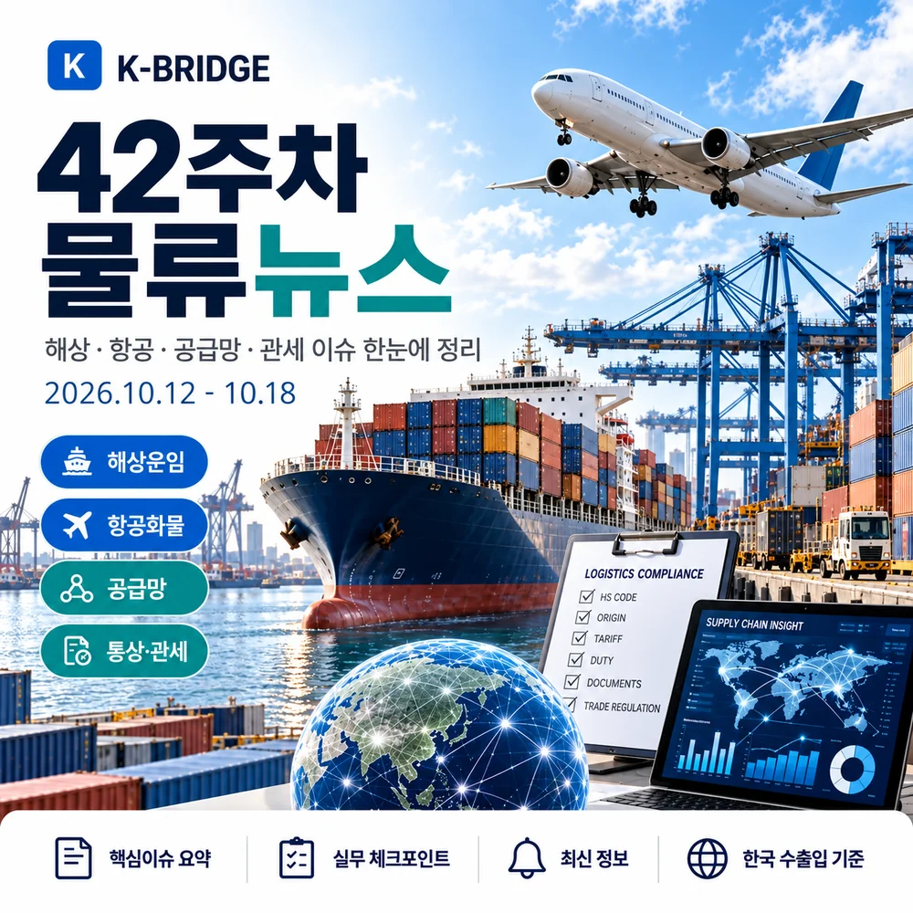
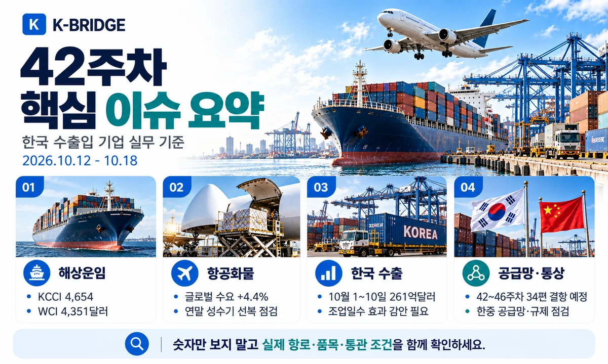
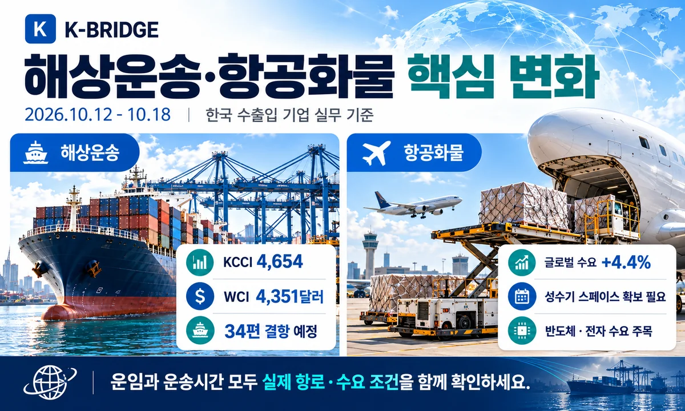
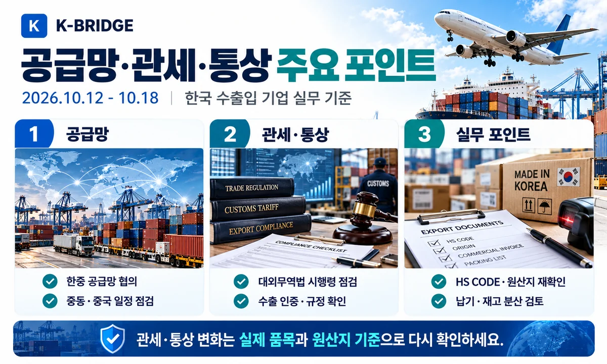
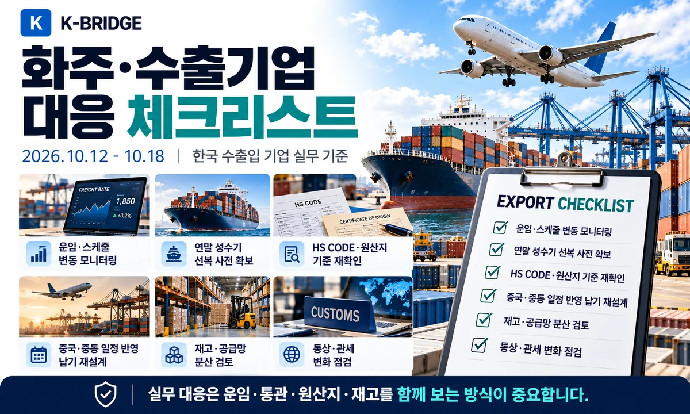

42주차, 화주가 먼저 확인할 3가지
1. KCCI는 4,654로 전주보다 소폭 올랐지만 미주 동안과 유럽은 반대 방향으로 움직였습니다.
2. 10월 초 수출 증가율 +102.0%는 조업일수 차이를 보정한 +28.5%와 함께 읽어야 합니다.
3. 한중 공급망 핫라인과 대외무역법 시행령 개정은 발표·의결과 실제 발효·품목 적용을 구분해야 합니다.

1. 숫자로 먼저 보는 42주차
2026년 10월 13일 발행 시점의 중간 브리핑입니다. 42주차 전체(10월 12~18일)가 마감된 뒤 나오는 확정 통계는 반영하지 않았습니다. 지표마다 발표일이 다르므로 수치의 기준일을 함께 확인하세요.
| 지표 | 발표 기준·수치 | 변화 | 실무 해석 |
|---|---|---|---|
| KCCI / 한국발 | 10/12 · 4,654 | +0.54% | 미동안 +3.64% / 유럽 -3.49% |
| Drewry WCI | 10/08 · $4,351/FEU | -2.0% | 중국 골든위크 전후 운임 조정 |
| 결항 예정 | 42~46주차 · 34편 | 713편 중 약 5% | 개별 선사·서비스 코드 확인 |
| 한국 수출 잠정 | 10/01~10 · 261억 달러 | +102.0% | 일평균 +28.5% 비교 필수 |
| IATA 글로벌 CTK | 8월 실적 · +4.4% | 전년 동월비 | 최신 발표 월간치 / 주간치 아님 |
2. 해상운임과 선복, 무엇이 달라졌나요?
KCCI 4,654, 전체 +0.54%지만 미국 동안과 유럽은 반대 방향
한국해양진흥공사의 10월 12일 KCCI는 4,654로 10월 6일 4,629보다 0.54% 상승했습니다. 미국 동안은 +3.64%, 서안은 +0.78%였지만 유럽은 -3.49%, 지중해는 -2.00%였습니다. 한국발 견적에서는 종합 평균보다 출발항·목적항·선사별 요율을 비교해야 합니다.
화주 대응: 미주 긴급 출고는 계약 운임과 스페이스를 함께 확인하고, 유럽은 하락한 지수가 실제 견적에 반영됐는지 점검하세요.
WCI 4,351달러, 골든위크 이후 동서항로 운임 재조정
Drewry가 10월 8일 발표한 WCI는 40피트당 4,351달러로 전주 대비 2% 하락했습니다. 상하이~LA는 7,624달러(-3%), 상하이~뉴욕은 10,220달러(-2%)였습니다. 이 지표는 주요 항로의 비교치로, 부산발 고객 실운임을 직접 의미하지 않습니다.
화주 대응: 한국 출발 운임 협상은 KCCI와 실제 All-in 견적을 우선하고 WCI는 국제시장 방향 비교에 활용하세요.
42~46주차 예정 항차 713편 중 34편 결항 예고
Drewry의 10월 9일 집계는 주요 동서항로 예정 713편 중 34편 결항(약 5%)을 예상했습니다. 결항의 약 절반은 아시아~북유럽·지중해, 32%는 태평양 동향으로 분류됩니다. 전체 결항률은 낮아 보여도 내가 예약한 한 항차가 취소되면 납기는 크게 달라질 수 있습니다.
화주 대응: 선박명·서비스 코드·CY 컷오프와 예약번호를 확인하고 대체항차를 1~2개 확보하세요.
수에즈 복귀 논의와 호르무즈 위험은 별도로 판단
일부 선사·얼라이언스의 수에즈 경유 재편 논의가 이어지고 있습니다. 그러나 수에즈 경유 계획이 있다고 중동 해역 전반이 안전해졌다는 뜻은 아닙니다. 항로 재편은 실제 적용 선박·운항일과 보안 공지를 기준으로 판단해야 합니다.
화주 대응: 홍해·수에즈 운항계획과 페르시아만·호르무즈 안전문제를 구분해서 보험·ETA를 재확인하세요.

3. 항공화물은 수요와 실제 운항을 분리해 보세요
항공화물 수요 +4.4%, 공급은 -0.1% / 최신 공식 월간치
IATA가 9월 29일 발표한 8월 글로벌 항공화물 운송실적(CTK)은 전년 동월 대비 +4.4%였고 공급(ACTK)은 -0.1%였습니다. 이 수치는 42주차 주간 확정치가 아니라 10월 13일까지 공개된 최신 월간 통계입니다.
화주 대응: 성수기 긴급화물은 화물 크기·성격별 주력편과 대체편을 동시에 확보하세요.
아시아~북미 항공화물 +13.2%, 중동 연계 노선은 역성장
같은 IATA 8월 통계에서 아시아~북미 항공화물 수요는 +13.2%로 주요 항로 중 가장 강했습니다. 반면 중동~아시아는 -11.0%, 유럽~중동은 -12.1%였습니다. 항공시장도 전체 평균 하나로 운임과 공간을 판단하기 어렵습니다.
화주 대응: 중동 환적과 북미 직항은 별도 운송 옵션으로 나누고 스페이스·보안 조건을 확인하세요.
중동 항공 운항·경유 리스크, 항공과 해상 모두 연결해서 확인
10월 13일 보도에서는 사우디 공항 운영 중단과 일부 중동행 항공편 중단 사례가 확인됐습니다. 단순한 항공 지연이 아니라 해상에서 항공으로 전환하려는 긴급 수요에도 영향을 줄 수 있습니다.
화주 대응: 중동 경유 항공운송은 실제 운항 여부·환적 가능성·비용·통관 연결시간까지 사전에 확인하세요.
4. 한국 수출입: 10일간 통계의 함정도 읽어야 합니다
10월 1~10일 수출 261억 달러, 전년 동기 +102.0% / 잠정
관세청은 10월 12일 10월 1~10일 수출 261억 달러(+102.0%), 수입 223억 달러(+65.5%), 무역흑자 38억 달러를 발표했습니다. 10월 초 잠정치이므로 월간 확정 실적과 구분해야 합니다.
화주 대응: 10일치 실적만으로 월 전체 선복을 계산하지 말고 실제 출고 계획·품목·운송 모드를 기준으로 배차하세요.
조업일수 차이 보정 시 일평균 수출 증가율은 +28.5%
관세청 발표의 원시 증감률 +102.0%에는 조업일수 차이(전년 3.5일, 올해 5.5일)가 반영됩니다. 일평균 수출액은 36.9억 달러에서 47.5억 달러로 28.5% 증가했습니다. 화주에게 시장을 설명할 때는 두 수치를 함께 제시해야 왜곡을 줄일 수 있습니다.
화주 대응: 전년 대비 성장률보다 실제 컨테이너·항공 편수에 연결되는 물량·납기·조업일수를 확인하세요.
반도체 수출 122억 달러 / 10월 1~10일 기준
관세청은 같은 기간 반도체 수출이 122억 달러로 10월 같은 기간 기준 최대라고 밝혔습니다. 고부가 장비·소재는 운임뿐 아니라 보안·항공운송 취급·수출통제 및 통관서류의 정확성이 중요합니다.
화주 대응: 반도체·장비 출하는 실제 규격, 충격·온습도 요구사항, HS CODE, 서류 마감시간을 사전에 확정하세요.
5. 공급망·관세·통상 정책
한중 공급망 핫라인 재가동, 주요 품목 조달 안정성 협의
산업통상부와 중국 상무부는 10월 13일 제4차 공급망 핫라인 회의와 제6차 한중 산업협력단지 실무회의를 진행했습니다. 핵심은 주요 품목의 원활한 도입과 예측가능한 공급망 소통입니다. 이는 공급 안정화를 위한 협의이며 수출입 제한이 즉시 해제됐다는 의미는 아닙니다.
화주 대응: 중국 거래처의 수출허가·공급일정·원산지·대체조달선은 계속 개별 확인해야 합니다.
대외무역법 시행령 개정 의결, 제한 조치 조사절차 구체화
10월 13일 국무회의에서 대외무역법 시행령 개정안이 의결됐습니다. 수출입 제한 조치에 앞선 조사 내용과 절차, 협정 활용지원용 통계 범위, 관련 지원기관 지정 요건 등을 구체화한 내용입니다. 의결 사실과 기업에 실제 적용되는 발효일·개별 제한조치는 구분해야 합니다.
화주 대응: 민감 품목·거래국이 있다면 품목별 신고규정과 향후 공고를 추적하고 계약서 변경조항을 검토하세요.
중국 의류·화장품 수출, 현지 GB 표준과 사후관리 확인
산업통상부는 10월 12일 상하이에서 중국 당국과 의류·화장품 관련 국가표준(GB)·시험·인증·사후관리 설명회를 열었습니다. 세율만 맞춰도 인증이 충족되지 않으면 현지 판매·통관 일정에 차질이 생길 수 있습니다.
화주 대응: 중국향 거래는 제품별 필수 인증과 라벨, 시험성적서, 현지 수입자 요건을 출하 전에 점검하세요.
조선 M.AX 얼라이언스 출범 / 2030년까지 1.4조원 이상 프로젝트
산업통상부·해양수산부는 10월 12일 자율운항선박 협력을 조선 공정 전반으로 확대하는 조선 M.AX 얼라이언스를 발표했습니다. 2030년까지 1.4조원 이상 규모의 3대 플래그십 프로젝트와 자율운항선박 기본계획 추진이 주요 내용입니다.
화주 대응: 조선기자재·특수화물 공급사는 기술개발 발표를 즉시 물동량 확정으로 보기보다 실제 발주·납기 계획을 확인하세요.

6. 중동·에너지·선박 제재 리스크
호르무즈 재개 협상은 진행 중, 항로 정상화로 단정 금지
10월 12일 Reuters 보도에서 이란은 호르무즈 재개 제안에 대한 미국 측 응답을 검토 중이라고 밝혔습니다. 이는 협상 상황이지 통항 정상화 발표가 아닙니다. 선박별 보험 인수, 통항 가능 여부, 항만 상황은 계속 불확실할 수 있습니다.
화주 대응: 중동 수출입은 예상 도착일을 단일 날짜로 약속하지 말고 대체 선적안과 보험·운임 조건을 함께 안내하세요.
중동 LNG 공급 차질, 한국 에너지·석화 공급망에 간접 영향
Reuters의 10월 12일 분석에 따르면 중동 LNG 시설과 해상운송 차질이 이어지고 있습니다. 원유 수출 일부가 회복해도 LNG는 생산시설 복구·선박 확보에 시간이 더 필요할 수 있습니다. 한국의 에너지·화학 원료 수급과 해상 운송비에 간접 영향을 줄 수 있습니다.
화주 대응: 유가뿐 아니라 LNG 조달선, 터미널 스케줄, 탱커 보험·환적비를 함께 확인하세요.
제재 관련 그림자선단 단속, 선박 검증 중요성 재확인
10월 13일 Reuters는 프랑스 당국이 러시아 제재 관련 의심 선박을 나포했다고 보도했습니다. 일반 화주도 선박 소유주·운항사·보험·제재 해당 여부가 불명확한 계약은 결제와 운송에 위험을 남길 수 있습니다.
화주 대응: 제재 위험 노선은 선박·용선자·은행·보험자에 대한 실사 결과를 출하 전 확인하세요.

7. 실제 선적 전 무엇을 확인할까요?
- 한국발 미주·유럽: KCCI 항로별 지수와 실제 All-in 견적, PSS, Free Time을 함께 비교
- 선복·골든위크: 블랭크 세일링과 CY 컷오프 변경 여부, 대체 항차 확보
- 항공화물: 주요 허브 운항 정상 여부와 북미·중동 경유 스페이스 사전 확보
- 중동·에너지: 호르무즈 통항, War Risk, 보험자 인수, ETA 여유일정 확보
- 중국 거래: GB 표준·필수 인증·출하서류, 중국 측 수출허가 요건 검토
- 국내 통상: 대외무역법 시행령 발효일과 대상 품목 개별 공고 확인
- 수출 통계 해석: 잠정치·조업일수·품목별 실제 물량을 구분해서 비교
8. 자주 묻는 질문
Q. 42주차 KCCI는 얼마인가요?
Q. 10월 초 수출이 102% 늘었다면 실제 물량도 두 배인가요?
Q. 42주차 운임이 오를까요, 내릴까요?
Q. 한중 공급망 회의나 대외무역법 개정으로 통관 규정이 즉시 바뀌나요?
KEY TAKEAWAYS / 핵심 실무 포인트
42주차 KCCI는 소폭 올랐지만 미국 동안과 유럽은 방향이 달랐습니다. 중국 공급망 협의·대외무역법 시행령 개정은 실제 발효일·품목별 요건을 별도로 확인해야 합니다.
NEXT STEP
관련 글 · 물류도구
운임이 아니라 실제 납기와 총물류비를 확인하세요
KBRIDGE는 한국 수출입 고객의 해상·항공·통관·국내운송을 함께 검토해, 중동 위험·선사 스케줄·원산지 및 수출통제 조건을 실제 출고 계획과 연결합니다.
본 콘텐츠는 2026년 10월 13일까지 확인 가능한 공식 발표와 보도를 기준으로 작성한 중간 브리핑입니다. 계약·선적·통관 전에는 실제 운송사 일정과 품목별 현행 규정을 다시 확인하시기 바랍니다.